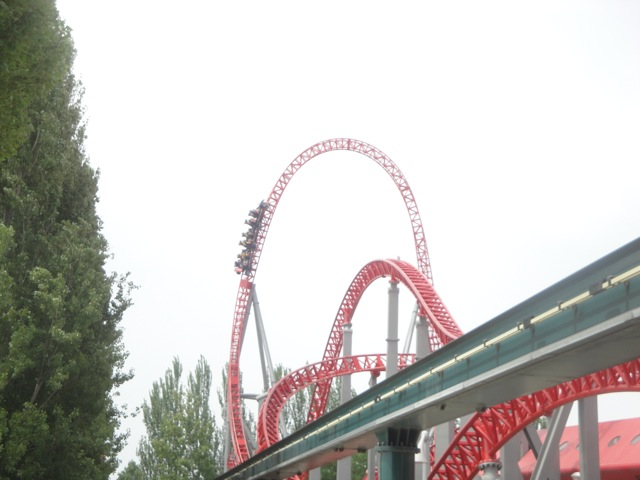
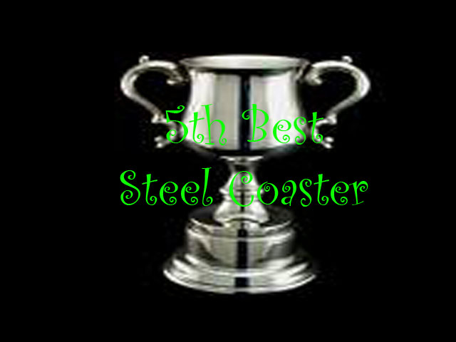
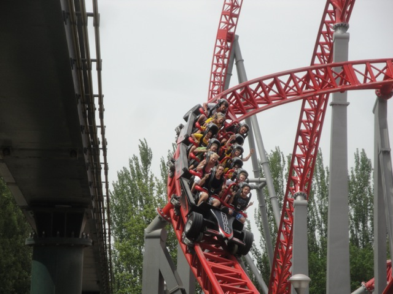
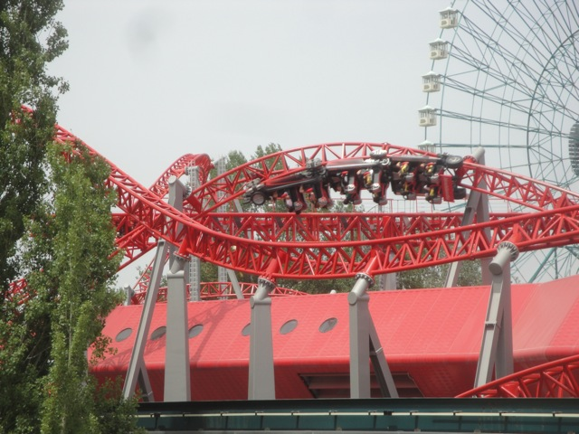
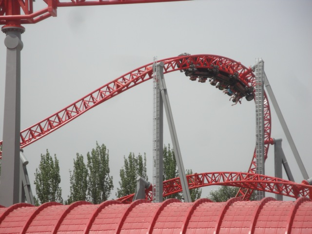
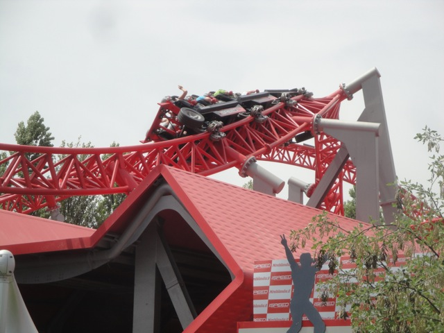
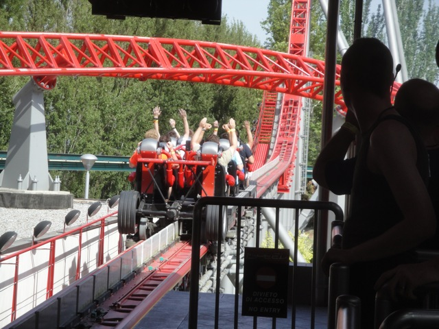
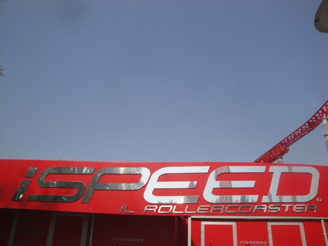

| |
Ispeed Review

We're here at Mirabilandia and today's ride we'll be reviewing for you is easily, without a doubt, one of the best roller coasters on the planet and easily the best coaster in all of Italy. ISPEED!!! Once you get in the seats and pull down the OTSR, you're off. And let me tell you something. Ispeed doesn't waste any time in being awesome. Right out of the station, it just punches you in the face with a launch. Not the best launch in the world, but still, a really fun launch that has a nice punch to it. On a really nerdy note, this is actually different from the other Rocket Coasters as this one uses LIMs instead of a Hydraulic Launch. But most of you don't give a rats ass about it. Hell, even I don't give a rats ass. Now back to how Ispeed is amazing. We then rise up into a top hat. And yeah, this Top Hat has some nice ejector air to it. You don't get a chance to enjoy the view from the top before you twist back down and dive towards the ground. Now so far, it seems like your ordinary rocket coaster. You've got a launch that packs quite a punch and a decent sized top hat that provides us with some great ejector air. However, whereas on the weaker Rocket Coasters, the ride would be ending with a bunny hop into the brake run. But on Ispeed, that was just the appetizer to wet our lips for the really good stuff that's about to commence. After a quick S bend that gives us some laterals we head over an airtime hill and just FLY over it. No seriously, you just snap over it in the blink of an eye. And that results in EJECTOR AIR!!! No seriously, the ejector air right here is among some of the strongest on any roller coaster. Just...DAMN!!! We head into a quick left turn before immidietly snapping into a beyond 90 degree right turn. And yes, we get some Maverick like laterals right here. Oh, how I love it. We then head around a big sweeping turn low to the ground. Better take this moment to catch your breath because this ride is gonna only crank up the insanity. We then go through this wave like turn that also provides with not only some sick laterals, but some strong ejector air at the same time. It's almost like a Mega-Lite right here. And then you immidietly get whipped into what easily has to be the most insane line twist on any coaster in the world. No, I'm serious. This does not play nice. It just WHIPS you through it without any second thoughts, hesitation, or consideration for any queasiness you may be feeling. In fact, I think I was later told that this inline twist is nearly identical to the one that was originally on Maverick, but had to be cut out for being too intense. Oh man, how I wish that they kept this on Maverick. Oh well. I still have Ispeed. We then turn to the right and dip back down towards the ground, gaining even more speed on top of our lightning insane speeds. We then head into a big sweeping overbanked turn. Ok, now this is starting to act like more of your standard roller coaster and less like it's on Bath Salts. We head around another graceful turn and SNAP!!! Into another inline twist. You don't even get a warning. You just plow right through it. I think by the time you even grasp what happened, you're right-side up and moving on. We head around a left turn and head into a brake run. But much to our joy, it's a midcourse brake run. YAY!!! There's more. Unfortunetly, the real good stuff is over and now the rides just starting to cool down. We head down the curved drop and rise over a small airtime hill. It's not anywhere near as good as the first airtime hill or even the top hat, but at least it has something. We then head around a turn and glide into the real brake run. So yeah, that was nothing. But let's look at the positives. HOLY CRAP!!! That had to have been one of the greatest coasters ever. It just has SO MUCH TO IT!!! THE AIRTIME!!! THE LATERALS!!! THE INLINE TWISTS!!! They're all so good!!! Ispeed is easily among the best coasters in the world. Even with it's mild cock-tease of an ending, it just does everything and it does it so well. It's like an orgasm. You just have to ride it when you go to Mirabilandia. You just have to. Its that good. It truley is that good.
10/10
Location: Mirabilandia
Opened: 2009
Built by: Intamin
Last Ridden: June 20, 2012

Ispeed Photos







Home
|